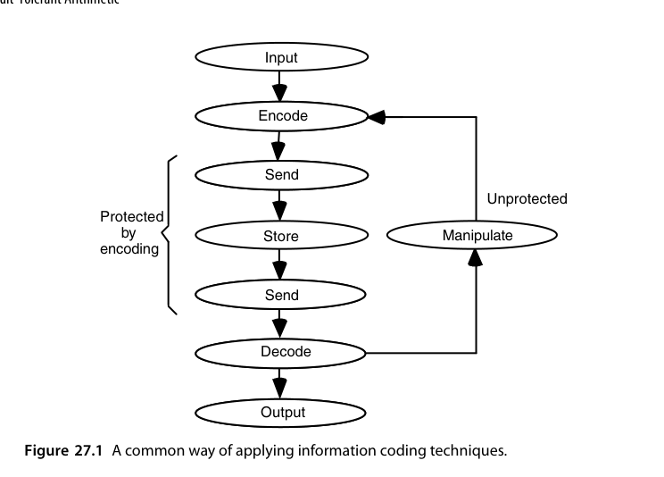
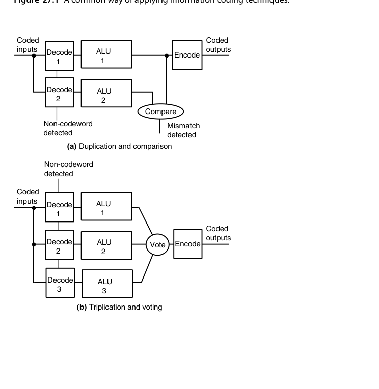
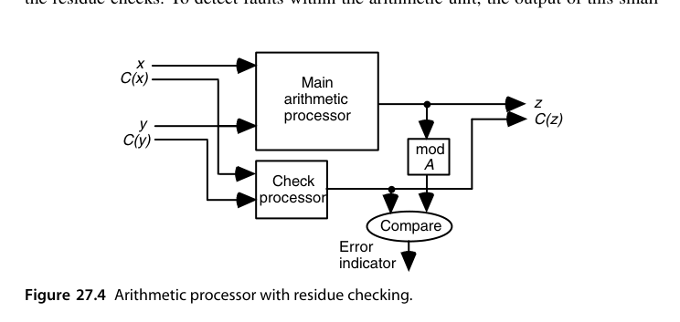
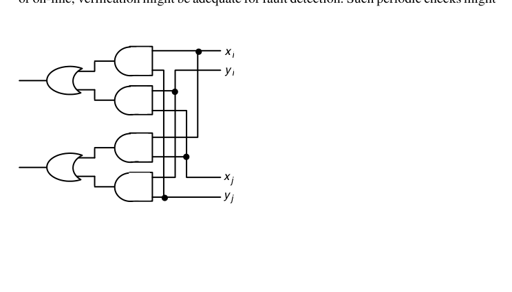
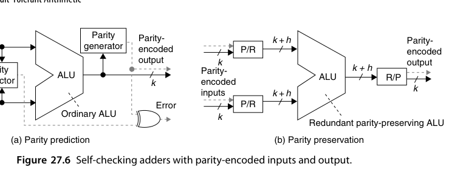

第27章 容错算术（Fault-Tolerant Arithmetic）
本章导读
芯片会出错：宇宙射线翻转存储位（软错误）、工艺缺陷、老化、电压扰动。安全关键系统（汽车、航天、医疗）要求算术单元出错能被检测甚至纠正。本章讲差错模型、算术编码（利用算术结构保持性的检错码）、自校验单元与算法级容错——第 4 章的冗余 RNS 在这里华丽返场。
27.1 故障、错误与纠错码（Faults, Errors, and Error Codes）
术语链：故障（fault）→ 错误（error）→ 失效（failure）。
- 故障是物理原因（位翻转、固定 0/1、短路）；错误是故障导致的内部状态异常；失效是错误传播到系统边界造成的服务异常；
- 软错误（soft error）：α 粒子/中子引发的瞬态翻转，随特征尺寸缩小而加剧——存储器早已标配 ECC，逻辑与数据通路的软错误防护是本章主题；
- 编码理论基础：汉明距离决定检错/纠错能力——距离 \(d\) 的码可检 \(d-1\) 错或纠 \(\lfloor (d-1)/2 \rfloor\) 错。
故障模型（fault model）是一切讨论的起点：永久故障（stuck-at-0/1、桥接短路）、瞬时故障（软错误、电源毛刺）、间歇故障（老化边缘、接触不良）三类的防护难度递增。任何检错/纠错方案的评价都相对于某个故障模型才有意义——“可检全部单比特错”只在单事件翻转（SEU）模型下成立；工艺进入个位数纳米后，一次粒子撞击翻转多个相邻单元的多单元翻转（MCU）比例明显上升，单纯按单比特假设设计的码开始显得单薄。
量级上，静态 RAM 的软错误率约为每 Gbit 每 \(10^9\) 小时数百到数千次（FIT 量级）；逻辑电路没有存储节点的电荷保持问题，错误率低 1-2 个数量级，但随电压下降、节点电荷减小而持续恶化。对一颗集成数十亿晶体管的芯片，“每天若干次瞬态翻转”是设计基线而非危言耸听——这正是把第 27 章从”航天专用话题”变成”通用设计议题”的原因。
业界的默认做法是接送受保护、中间裸奔（图 27.1）：通信链路与存储器由奇偶、校验和、SEC/DED 等码保护，而中间的运算部分没有任何保护——因为普通码对算术运算不封闭。两个偶校验数相加，结果未必还是偶校验；改动受校验和保护的数据表中的一个元素，就得重算整个校验和。解码/编码这道门槛正是算术码要解决的痛点。

最直接的方案是复制 + 比较（检错）或三模冗余 + 表决（屏蔽单个错误），如图 27.2。两张图里有几个细节值得咀嚼：
- 图中解码器被一起复制了，否则解码器单点故障会漏检；而编码器是”关键元件”——它的输出是冗余（编码后的）的，因此可以把它设计成自校验（self-checking）的：一旦自身出问题就吐出一个非码字。
- 图中表决器无法自校验，因为它的输出是非冗余的。把表决与编码两个功能合并起来，才有可能做出自校验的表决-编码器。
- 三模之外推广到 \(n\) 模可以容忍更多故障，但开销增长很快就不可接受。
可靠性的账可以用一个公式记住：设单模块可靠度为 \(R\)、表决器理想，则三模冗余（TMR）的可靠度为
\[ R_{TMR} = 3R^2 - 2R^3 \]
\(R = 0.9\) 时 \(R_{TMR} = 0.972\)——单点故障被屏蔽的收益真实可见；但 \(R\) 较低时 TMR 反而更差（三个不可靠部件加起来的暴露面更大）。这解释了为什么冗余只在”单模块本身已经相当可靠”的系统里有效，也解释了为什么表决器与比较器自身的可靠性必须单独论证——它们不在冗余的保护范围之内。

为什么通信码不适合算术。通信领域习惯按”随机错误”“突发错误”分类，这在算术里没有意义：加法器进位链上一个门的故障可以翻转任意多个输出位。看图 27.3 的例子：
0010 0111 0010 0001
+ 0101 1000 1101 0011
0111 1111 1111 0100 ← 正确和
1000 0000 0000 0100 ← 错误和（某级产生了错误的进位 1）两个结果的汉明距离是 12——看上去是”十二位错”。但它们的数值差只有 \(2^4 = 16\)！算术处理的是数，不是任意比特串，合适的度量应该是后者。
由此定义算术权重（arithmetic weight）：把一个正确值变成错误值所需相加的最少带符号 2 的幂的个数。上面的例子权重为 1；而 \(\text{-}32752 = -2^{15} + 2^4\) 这类差值的权重为 2。相应地可以证明：\(k\) 比特错误幅度的最小权重 BSD 表示最多有 \(\lceil (k+1)/2 \rceil\) 个非零数字，且总能写成没有相邻非零数字的规范 BSD 形式——规范形式唯一，与算术权重的概念紧密相连。
27.2 算术检错码（Arithmetic Error-Detecting Codes）
普通检错码（奇偶、汉明）为存储/传输设计，但算术运算不保持码字结构（两个合法码字相加一般不是合法码字）。算术码专为此设计：
- AN 码：把数 \(x\) 编码为 \(A \cdot x\)（\(A\) 为常数，如 3）。加法保持结构：\(Ax + Ay = A(x+y)\)——结果仍是合法码字，能被 \(A\) 整除即可检错。可检所有单比特错误（\(A\) 选奇数时）；
- 剩余码（residue code）：编码 = 数据 + 其对模 \(m\) 的剩余。加法后校验：\((x + y) \bmod m \stackrel{?}{=} (x \bmod m + y \bmod m) \bmod m\)。\(m = 3\)（低成本剩余码）只需 2 位校验，可检单比特错；
- 双剩余/反向剩余：两份独立的剩余校验提高覆盖率。
算术码有两条定义性质的要求：(1) 按可检错误的算术权重来刻画能力；(2) 允许直接在编码操作数上做算术。第二条是省钱的关键——比起全复制或三模冗余，算术码用低得多的冗余把整条数据通路罩住。
乘积码（AN 码）与低成本形式
数 \(N\) 编码为 \(AN\)，校验就是检查能否被 \(A\) 整除。\(A\) 取奇数时，所有权 1 的算术错误（含全部单比特错误）都能检出：因为错误幅度为 \(\pm 2^i\)，而奇数 \(A\) 不可能整除 \(2^i\)。权重 2 及以上的错误不保证可检——例如 \(32736 = 2^{15} - 2^{5}\) 能被 3、11、31 同时整除，用这些 \(A\) 都漏检。
让 \(A = 2^a - 1\) 就得到低成本乘积码：乘 \(A\) 只需”移位 + 减”（逐 \(a\) 位做的话只要一个 \(a\) 位加法器、一个 \(a\) 位寄存器和一个进位触发器），除 \(A\) 同样简单——由 \(y = (2^a - 1)x\) 求 \(x\) 等价于算 \(2^a x - y\)，而 \(2^a x\) 的末 \(a\) 位必为 0，于是可以逐段反推出 \(x\)。
以 \(A = 7\)（\(a = 3\)）为例走一遍校验：\(x = 25\) 编码为 \(y = 7x = 175\)。校验时把 \(y\) 按 3 位分段 \(010\,101\,111_{two}\)，逐段做模 7 累加（循环进位）得 \(2 + 5 + 7 \equiv 0 \pmod 7\)——能整除，码字合法。若某一位翻转使 \(y\) 变为 \(183\)，分段和变为 \(2 + 5 + 7 + 8 \equiv 1 \pmod 7\)，立刻检出。编码端同样便宜：\(7x = 8x - x\)，一次移位减即得。
定理 27.1：用 \(A = 2^a - 1\) 的低成本乘积码，可检出算术权重不超过 \(a-1\) 的单向错误（所有出错位的翻转方向一致，在 CMOS 里是很典型的错误形态）。
举例：\(A = 15\)（\(a = 4\)）除了所有权 1 错误，还能检出权重 2、3 的单向错误，因为这类错误幅度不会是 15 的倍数：\(8 + 4 = 12\)、\(128 + 4 = 132\)、\(16 + 4 + 2 = 22\)、\(256 + 16 + 2 = 274\)，全都不是 15 的倍数。
编码后的算术也很整洁：
\[ Ax \pm Ay = A(x \pm y) \quad \text{（加减直接做）}, \qquad Aa \times Ax = A^2 ax \quad \text{（乘完要除以 } A \text{ 才是码字）} \]
除法最麻烦。由 \(z = qd + s\) 有 \(Az = q(Ad) + As\)：余数是编码形式的，商却是裸的——算商的过程中出的错一个也查不出来。对策是先把被除数预乘 \(A\)，用 \(A^2 z\) 除以 \(Ad\)，再把末位 radix-\(2^a\) 商数字调整到区间 \([-2^a + 2,\, 1]\) 内使修正后的商 \(q^{**}\) 正好是 \(A\) 的倍数。开方有完全类似的问题（\(\lfloor\sqrt{A^2 x}\rfloor\) 通常不等于 \(A\lfloor\sqrt{x}\rfloor\)），用同一套路解决。
AN 码属于非分离码（nonseparable）：数据和校验信息绞在一起，看一眼 \(AN\) 得不出 \(N\)。这带来一个常被忽视的工程后果：每次要把数值送去显示、比较或做格式转换，都得先做一次除 \(A\) 解码——在非分离码保护全系统的方案里，编解码器的速度与自校验能力本身也成了关键路径的一部分。
不过有些操作在非分离码上依然免费：\(A\) 取正数时 \(Ax\) 与 \(Ay\) 的大小顺序与 \(x, y\) 一致，因此比较与判号可以直接在编码态做；加减法也免费。真正需要解码的是溢出判断、浮点规格化、与外设交换这类必须解读绝对数值的操作。设计非分离码系统时，把”哪些操作必须解码”列成清单，是避免解码器沦为新单点的前提。
剩余码与反向剩余码
剩余码把数编成配对 \((N, C(N))\)，其中 \(C(N) = N \bmod A\)——这是分离码，数据部分和校验部分互不混淆，因此”解码”（读出真值）是零成本的。取 \(A = 2^a - 1\) 时编码只要把 \(N\) 的 \(a\) 位分段做模 \(2^a - 1\) 加法（\(a\) 位加法器 + 循环进位），既可串行也可排成二叉树并行。
算术运算同样干净：
\[ (x, C(x)) \pm (y, C(y)) = \bigl(x \pm y,\ (C(x) \pm C(y)) \bmod A\bigr) \]
\[ (a, C(a)) \times (x, C(x)) = \bigl(a \times x,\ (C(a) \times C(x)) \bmod A\bigr) \]

按图 27.4 搭出来的结构是全章最有价值的一张图：主算术处理器 + 小的校验处理器 + 比较器。这正是”弃九法（casting out nines）“的硬件版本——我们手算乘法时习惯用”两边各自的数字和对 9 取余是否一致”来快速验算，本质上是同一个想法。
举个具体数字，\(A = 3\)：\(x = 25\) 的剩余 \(C(25) = 1\)，\(y = 13\) 的剩余 \(C(13) = 1\)；和 \(38\) 的剩余应为 \((1+1) \bmod 3 = 2\)，而 \(38 \bmod 3 = 2\)，一致。换成 AN 码：\(A=3\) 时 \(x \to 75\)、\(y \to 39\)，和 \(=114 = 3 \times 38\)；若第 3 位（权值 8）翻转得到 \(122\)，除以 3 不整除 → 检出。
开销账也算一下：\(k = 32\) 位数据配 \(A = 3\)（\(a = 2\)）的剩余码，校验位只有 2 位，冗余 6%；校验处理器就是一个 2 位的模 3 加法器（含循环进位修正），面积不到主加法器的 5%。位宽越大，剩余码的相对开销越小——这是它在宽数据通路上极具吸引力的原因。
但剩余码对单向多位错误的能力弱于乘积码：\(A = 15\) 的剩余码检不出”数据最低位与剩余最低位同时由 0 变 1”这类权重 2 错误——因为这等于给数据和剩余同时加 1，结果仍是一个合法码字。
修法是反向剩余码（inverse residue code）：校验部分不再是 \(N \bmod A\)，而是 \(A - (N \bmod A)\)。当 \(A = 2^a - 1\) 时它恰好是 \(N \bmod A\) 的逐位取反。单向错误现在会使数据部分与校验部分朝相反方向变化，于是更容易暴露。这一点可以严格化：把 \(a\) 位的反向剩余 \(C'(N)\) 拼到 \(k\) 位 \(N\) 的最低位一侧，所得 \((k+a)\) 位数恰好是 \(A\) 的倍数，于是有
定理 27.2：用 \(A = 2^a - 1\) 的低成本反向剩余码，可检出算术权重不超过 \(a-1\) 的单向错误。
三者的代价比较也值得记：位宽开销上，三者都需要 \(a\) 个额外位；做加减乘时，剩余码比乘积码简单（不需要乘除 \(A\)）；做除法时则相反，剩余码更难（校验处理器无法独立工作，必须与主处理器交互才能算出结果的余）。
把三种码放进应用场景里看：总线与寄存器堆的端到端保护选奇偶或剩余码（分离、解码免费）；运算密集且错误形态以单向多位为主的定制数据通路，选低成本乘积码或反向剩余码；需要在线纠错的场合才会走到双剩余码乃至更多模数。没有一种码通吃，但”\(A = 2^a - 1\) 的低成本形式”是所有场景的共同底座。
另外两条深刻的”不可能”结论值得背下来：
- 剩余类码是唯一能够校验加法器的分离码（Peterson, 1958）；
- 按位逻辑运算（AND/OR/XOR）无法用低于 100% 冗余的任何编码方案来检错（Peterson & Rabin, 1959）——也就是说，对逻辑运算，除了复制比较别无捷径。
算术码的精髓：校验通道与数据通道并行、各自独立运算，结果互相比对。校验通道位宽小（模 3 只需 2 位），面积开销 10-30%，却能罩住整个数据通路——比全复制（DMR）便宜得多。
27.3 算术纠错码（Arithmetic Error-Correcting Codes）
把剩余码扩展到多个模数：模 \(m_1, m_2\) 的两组剩余可提供纠错所需冗余（本质是 RNS 的纠错应用，27.6 节）。乘积码（AN 码的 \(A\) 取复合数）也能提供纠错能力。纠错码的代价显著高于检错码——多数安全设计选”检错 + 重算/重启”而非在线纠错。
典型的代表是双剩余码（biresidue code）：数 \(N\) 编成三元组 \((N, C(N), D(N))\)，其中 \(C(N) = N \bmod A\)、\(D(N) = N \bmod B\)。\(k\) 位数据总共需要 \(k + \lceil \log_2 A \rceil + \lceil \log_2 B \rceil\) 位。两个校验处理器可以并行工作，不损失速度。
纠错的判据很清晰：
- 若只有 \(C(N)\) 出错：\(C\) 侧的校验失败、\(D\) 侧通过 → 重算 \(N \bmod A\) 即可纠正；
- 若 \(N\) 出错（且错误幅度不是 \(A\) 或 \(B\) 的倍数）：两侧都失败 → 定位到数据部分。此时 \[ \bigl[(N_{wrong} \bmod A) - C(N)\bigr] \bmod A, \qquad \bigl[(N_{wrong} \bmod B) - D(N)\bigr] \bmod B \] 这对差值构成错误综合征（error syndrome）；只要不同错误对应的综合征互不相同，就可从综合征表反查出错误值并减掉。
以 \(A = 7\)、\(B = 15\) 为例：\(|E| \le 2048\) 内的所有权重 1 误差都有独一无二的综合征（例如 \(E = 64\) 的模 7/模 15 余量是 \((1, 4)\)，\(E = -64\) 是 \((6, 11)\)），因此可纠；\(E = 64 \times 64 = 4096\) 之后综合征开始循环重复（\((1,1)\) 与 \(E=1\) 相同）。结论：这套码只能保证数据部分在 12 位以内。两个剩余共需 7 位表示，于是冗余为 \(7/12 \approx 58\%\)。
综合征表长什么样？把 \(E = \pm 2^i\) 逐个代入 \((E \bmod 7,\ E \bmod 15)\)：\(E = 1 \to (1,1)\)，\(2 \to (2,2)\)，\(4 \to (4,4)\)，\(8 \to (1,8)\)，\(16 \to (2,1)\)，\(32 \to (4,2)\)，\(64 \to (1,4)\)，\(128 \to (2,8)\)，\(256 \to (4,1)\)，\(512 \to (1,2)\)，\(1024 \to (2,4)\)，\(2048 \to (4,8)\)——12 个值互不相同，负值对称取余也不冲突；而 \(E = 2^{12} = 4096\) 回到 \((1,1)\)，与 \(E = 1\) 相撞。数据部分 12 位的上限，就是这张表”撞车”的位置。
换成乘积码做同样的事要贵得多：取 \(A \times B = 105\)，为了让所有的权重 1 错误都有不同余量，整个码字宽度必须限制在 12 位以内，最大可表示数只有 \(4095/105 = 39\)——换算成约 5.3 位有效数据，冗余高达 \(127\%\)。分离与否，代价差了一倍多。
一般情形：\(A = 2^a - 1\)、\(B = 2^b - 1\) 且互素时，双剩余码可以支撑 \(ab\) 位数据部分做权重 1 纠错，冗余为 \((a+b)/(ab) = 1/a + 1/b\)。把 \(a, b\) 取大一点，冗余可以压得很低——这是设计中最实用的一条标度律。
在线纠错真正值得付出的场景是无法重算的地方：深空探测器（重传的代价是几十分钟的单程时延）、硬实时控制回路（错过截止期即失效）、以及不可中断的长周期任务。数据中心与多数车载 ECU 的主流选择仍是”检错 + 重算/重启”，因为纠错所需的冗余足以把能效指标拖垮，而重算的成本往往只是几拍流水。
最后一条很有价值的观察：既然算术检错/纠错码既罩得住运算也罩得住存储与传输，全系统统一用一种码就可以避免频繁的编解码，也消除了数据在”裸状态”下被搬运时的风险敞口。
27.4 自校验功能单元（Self-Checking Function Units）
设计目标：单元内部任何单点故障，要么输出正确，要么触发错误指示（故障安全 fault-secure 或 自测试 self-testing 性质）。手段：
- 复制 + 比较（DMR）：两份硬件 + 比较器——100% 面积开销，但概念最简、覆盖最彻底（含瞬时故障）；
- 时间冗余（RESO/RECO）：同一硬件用变换后的输入算两遍（如取补），比对结果——几乎零面积开销，代价是双倍时间；
- 预测逻辑：进位预测（用输入独立算出 \(c_{out}\) 的估计）与实际输出比对——加法器的轻量自检；
- 双轨/差分逻辑：每比特用互补两根线表示，非法组合即错误——异步设计的附带福利。
自校验单元分为”带编码输入/输出”与”不带编码输入/输出”两种。把图 27.4 中由外部提供的 \(x \bmod A\)、\(y \bmod A\) 改成在内部自行计算，就得到一个输入输出都无需编码、但内部自校验的算术单元。
自校验设计的基本契约是：规定的故障集合内的任何故障，要么被屏蔽（不影响输出正确性），要么把一个非码字推到输出上——后者要么被输出端的码检验器当场抓到，要么被下一级自校验模块继续传播（要求下一个模块在收到非码字输入时就吐出非码字输出），最终总要露馅。这与浮点里 NaN 的传播方式惊人相似。
文献里把这套契约拆成两个正式性质：故障安全（fault-secure）——规定故障集合内的故障要么不产生错误输出、要么产生非码字；自测试（self-testing）——规定故障集合内的每个故障，至少存在一组正常输入能让它暴露为非码字。两者兼备的单元称为完全自校验（totally self-checking, TSC）。只有故障安全没有自测试的单元，故障可能永远潜伏；只有自测试没有故障安全的单元，故障可能在被触发暴露之前就已污染输出。
时间冗余值得再展开一点。RESO（recomputing with shifted operands，移位操作数重算）利用算术的位移性质：第一遍正常计算，第二遍把操作数左移 \(c\) 位再算，结果应恰好是第一遍的 \(2^c\) 倍；两遍不符即报警。它能抓住的故障类型取决于功能单元对位移的”协变性”——加减法、乘法都对左移协变，因此同一硬件、两份时间就能实现接近 DMR 的覆盖率，面积开销几乎为零。这是资源受限场景（小型嵌入式控制器、传感器节点）里性价比最高的容错手段。
校验器本身必须自校验，这是最容易被忽略的一环。以反向剩余码 \((N, C'(N))\) 为例：算出 \(N \bmod A\)，它必须恰好等于 \(C'(N)\) 的逐位取反。检验两个 \(b\) 位数是否互为取反，等价于要求所有信号对 \((x_i, y_i)\) 都取 \((1,0)\) 或 \((0,1)\)——这是一个把布尔值做 AND 的问题，而这些布尔值本身用双轨编码：
| 逻辑值 | 编码 |
|---|---|
| 1 | \((1, 0)\) 或 \((0, 1)\) |
| 0 | \((0, 0)\) 或 \((1, 1)\) |

用图 27.5 的两输入 AND 电路搭成树，就得到一个自校验校验器：任何单个门或线的故障都不可能对非码字输入产生有效的 \((1,0)/(0,1)\) 输出。这里有一条通用教训：只有一根输出线的校验器不可能是自校验的——输出线上一个固定型故障就能给出误导性结果。
还有一种风格不同的路子是结果校验（result checking），对应软件容错里的”验收测试（acceptance testing）“。例如验证开方器：把算出的根平方回去与被开方数比较。只要”平方过程的错误”与”开方过程的错误”独立、不太可能相互抵消，通过测试的结果就以极高概率正确。验收测试不要求完美覆盖——如果假设故障是永久性的且极少发生，那么周期性检查（而非并发或在线检查）也许就够了：例如隔一段时间拿若干随机操作数跑一遍验证，目的是让”补偿性错误”不至于长期掩盖同一个坏元器件。

奇偶码冗余极低（一位），虽然单次覆盖率不高，但按”长期看能在合理时间内发现故障件”的标准，它往往是最划算的选择。难点在于奇偶码对算术不封闭，必须想办法”预测”输出的奇偶。预测的基本恒等式是
\[ p(s) = p(x) \oplus p(y) \oplus p(c) \]
其中 \(p(c)\) 是加法过程中全部内部进位位的奇偶。于是预测器只需从输入独立算出进位链的奇偶——比完整加法便宜得多，但仍需一条精简的进位网络；进位网络本身的故障也被这一比对覆盖。(a) 图用这样一条独立的奇偶预测器并联在数据通路旁；(b) 图则换思路：先把奇偶编码的输入转成偶奇偶的 BSD 数，用一个保奇偶的 BSD 加法器算出偶奇偶的冗余和，再转回奇偶编码的常规输出。(b) 的成立依赖于一个巧妙的事实：可以把两个相邻 BSD 数字编成一个偶奇偶的 4 位码——因为数字 0 同时有 \(+0\) 与 \(-0\) 两种表示，正好提供奇奇偶、偶奇偶两种编码选择，闭合才得以成立。对 2 的补码操作数还需要的少量调整可见书末文献 [Parh02]。
27.5 算法级容错（Algorithm-Based Fault Tolerance, ABFT）
在算法层嵌入校验，而非电路层：
- 矩阵乘法：给矩阵加一行/列校验和，乘积矩阵的校验行列应与”校验行列的乘积”一致——一个校验向量罩住整个 \(O(n^3)\) 计算，开销 \(O(n^2)\)；
- FFT、卷积、线性代数内核都有类似的”校验和保持”结构；
- ABFT 是 GPU/加速器容错的主力路线（电路级防护在大阵列上太贵）。
把这套东西写具体。向量（一行或一列数）的校验和是各元素对某个校验常数 \(A\) 的代数和。对 \(m \times n\) 矩阵 \(M\) 定义：
- 行校验和矩阵 \(M_r\)：\(m \times (n+1)\)，前 \(n\) 列同 \(M\)，第 \(n\) 列是各行校验和；
- 列校验和矩阵 \(M_c\)：\((m+1) \times n\)，前 \(m\) 行同 \(M\)，第 \(m\) 行是各列校验和；
- 全校验和矩阵 \(M_f = (M_r)_c\)：\((m+1) \times (n+1)\)。
以 \(A = 8\) 为例：
\[ M = \begin{pmatrix} 2 & 1 & 6 \\ 5 & 3 & 4 \\ 3 & 2 & 7 \end{pmatrix}, \quad M_r = \begin{pmatrix} 2 & 1 & 6 & 1 \\ 5 & 3 & 4 & 4 \\ 3 & 2 & 7 & 4 \end{pmatrix}, \quad M_c = \begin{pmatrix} 2 & 1 & 6 \\ 5 & 3 & 4 \\ 3 & 2 & 7 \\ 2 & 6 & 1 \end{pmatrix}, \quad M_f = \begin{pmatrix} 2 & 1 & 6 & 1 \\ 5 & 3 & 4 & 4 \\ 3 & 2 & 7 & 4 \\ 2 & 6 & 1 & 1 \end{pmatrix} \]
逐项核对不难：\(2+1+6 = 9 \equiv 1 \pmod 8\)，\(2+5+3 = 10 \equiv 2\)，右下角的 \(1\) 无论是横向加（\(2+6+1 = 9\)）还是纵向加（\(1+4+4 = 9\)）都一致。
有了这些定义，核心结论一句话：
定理 27.3：若 \(P = X \times Y\)，则 \(P_f = X_c \times Y_r\)。
定理 27.4：在全校验和矩阵中，任一个错误元素可被纠正，任意三个错误元素可被检出。
纠错的具体操作也值得一说：若 \(P_f\) 中第 \(i\) 行的行校验和与该行元素重算值不符、且第 \(j\) 列的列校验和也不符，则交点 \((i, j)\) 就是出错元素，其修正量等于行（或列）校验和的差值——行列交叉定位，一次减法修复。只有当错误恰好落在同一行或同一列的多个元素上时，才退化到”只能检、不能纠”的情形，这正是定理 27.4 中”纠一检三”的来源。
工程含义非常清楚：把 \(X_c\) 与 \(Y_r\) 直接喂给标准矩阵乘法硬件，然后检查乘积矩阵的最后一行/最后一列是否与”由其余元素算出的校验和”一致，就能发现任何错误。开销只是矩阵尺寸从 \(n \times n\) 变成 \((n+1) \times (n+1)\)——相对计算量的 \(O(n^3)\)，这几乎免费。对于硬件乘法器上一个瞬时毛刺这种”高度局部化”的错误（最多波及乘积矩阵的若干元素），上述方案既能检出也能纠正。
同样的”校验和保持”结构存在于 FFT：DFT 是线性变换，输入序列全体求和得到的额外样本经 FFT 后，等于输出频域分量全体求和——把”输入和”作为一个校验通道随主流一起算，输出端一次求和即可验证整个 \(O(n\log n)\) 计算。卷积、FIR、各类线性代数内核都有各自的廉价不变量可用。
校验和还可以加权：给第 \(i\) 个元素配权重 \(w_i\)（最简单的取 \(w_i = i\)），则加权和不仅能报告”有错”，还能指出错误的位置——未加权校验和发现”和变了”，加权校验和进一步回答”和在哪里变了”。ABFT 文献中两者常搭配使用，用接近翻倍的校验开销换来错误定位能力。
要注意的是浮点元素会让等式近似成立，于是”怎样才算相等”变成了一个需要阈值的问题；更长篇幅的讨论见书末文献 [Dutt96]。
大模型训练中的”静默数据损坏（SDC）“事件让工业界重新发现 ABFT 的价值：万卡集群跑一个月，硬件瞬态错误不是”会不会发生”而是”发生几次”。算法级校验 + 周期 checkpoint 是当前的事实标准。
27.6 容错 RNS 算术（Fault-Tolerant RNS Arithmetic）
第 4 章埋的线在这里收拢：冗余 RNS（RRNS）——在正常模数之外加冗余模数，余数向量空间的合法子集天然构成纠错码：
- 一个通道出错 → 余数向量落在合法空间之外（检错）；
- 足够冗余时可通过”逐通道剔除 + CRT 重建”定位并纠正错误通道；
- RNS 的通道独立性使错误天然隔离——不会跨通道传播，这是二进制数制给不了的奢侈品。
做法：选定一组模数，使得去掉任意一个模数后，剩下的模数仍足以表示所需的动态范围。此时任何局限于单一剩余的错误都可检出——因为出错的那个剩余会与其余剩余不相容。注意冗余模数必须是最大的那个（记为 \(m\)）：用其余所有剩余经 基底扩展（base extension） 算出该数模 \(m\) 的剩余，再与实际表示中的模 \(m\) 剩余比较即可。
基底扩展本身是 RNS 里的常规操作：已知 \(x\) 在一组模数下的剩余，求它在另一个模数下的剩余。标准路径是先经中国剩余定理（CRT）把剩余向量转成混合基数表示，再把混合基数数字对目标模数逐项加权取余。它本来就是 RNS 处理器做大小比较、符号判断、除法时的必备构建块，因此把它挪来当检错器用，几乎不需要新增硬件。
混合基数转换的成本也不妨记下来：\(n\) 个通道的基底扩展约需 \(n(n-1)/2\) 次模乘加——通道数不多（4-8 个是 RNS 的常见规模）时，这是一块几级流水就能吞下的小电路。把检错逻辑做成可关闭的可选级，还能在非关键模式下把这部分功耗也省掉。
这个方案最美的地方在于：算术算法一点都不用改。\(\pm\) 和 \(\times\) 照旧逐通道独立进行，检错能力纯粹靠”把动态范围做大”换来的。而基底扩展本来就是 RNS 处理器实现各种运算时的常用构建块，因此检错的硬件增量几乎为零——只要多留一个剩余通道。甚至可以在做非关键计算时关掉检错、把全部模数的动态范围都拿来用。
加多个冗余剩余则可以得到更强的能力——既能检出更多错误，也能纠正某些类别的错误（多剩余码的机理与 27.3 节双剩余码的综合征逻辑完全相同）。同样是只增加校验算法与对应硬件，算术算法一行都不用改。
冗余模数还提供一个有用的视角：RRNS 把动态范围当成一种可消费的预算——平时把预算花在表示更大的数上，需要容错时把同一笔预算花在区分合法与非法状态上。两种用途可以随时切换，这是 RRNS 设计独有的灵活性。
看一个完整的例子。原模数集为 \(\{8, 7, 5, 3\}\)，动态范围 \(8 \times 7 \times 5 \times 3 = 840\)；添加冗余模数 \(13\) 和 \(11\) 后成为 6 通道 RRNS。数 \(25\) 按模数从大到小排列表示为
\[ (12,\, 3,\, 1,\, 4,\, 0,\, 1) \]
逐个核对：\(25 \bmod 13 = 12\)、\(\bmod 11 = 3\)、\(\bmod 8 = 1\)、\(\bmod 7 = 4\)、\(\bmod 5 = 0\)、\(\bmod 3 = 1\)。
假设模 7 通道出错，剩余从 \(4\) 变成 \(6\)，得到受污染的数 \((-,\,-,\,1,\,6,\,0,\,1)\)。用另外四个（非冗余）剩余做基底扩展：由 \((-,-,1,6,0,1)\)（即 \(x \bmod 8 = 1\)、\(x \bmod 7 = 6\)、\(x \bmod 5 = 0\)、\(x \bmod 3 = 1\)）经 CRT 得 \(x = 265\)，其模 13、模 11 剩余分别为 \(5\) 和 \(1\)，于是重建成
\[ (5,\, 1,\, 1,\, 6,\, 0,\, 1) \]
受污染的原向量与重建向量的前两个分量之差为 \((12 - 5,\ 3 - 1) = (+7,\, +2)\)——这就是错误综合征，它唯一地指向”出错的是模 7 通道”，并能给出该通道应有的修正量。整个流程与 27.3 节双剩余码的综合征表完全同构。
二进制里一个进位错误能一路传播、翻转任意多位（见 27.1 节的例子）；RNS 里各通道没有进位联系，一个通道的错误永远只会污染那一个通道。加上”冗余模数 = 更大的动态范围”这一零成本保护层，RRNS 就成了少数几处数制本身即防御工事的设计。代价仍然是老问题：大小比较、符号判断、溢出检测这些全局操作难做（第 4.4 节）。
本章小结
- 故障→错误→失效；软错误率随工艺上升，数据通路防护从可选变必需。
- 算术权值（最少带符号 \(2^i\) 之和）而非汉明距离，才是算术错误的正确度量：一次进位错误可有 12 位汉明距离却只有权重 1。
- 算术码（AN/乘积码、剩余码、反向剩余码）：校验通道平行于数据通道，10-30% 开销罩全局；\(A = 2^a-1\) 让编解码变成移位加/循环进位。
- 双剩余码支撑 \(ab\) 位数据纠权重 1 错，冗余 \(1/a + 1/b\)；乘积码做同样的事冗余高出一倍。
- 自校验单元：校验器自身必须自校验且必须有两根输出线；DMR/时间冗余/奇偶预测-保持/验收测试，面积-时间-覆盖率各取所需。
- ABFT 用数据结构的数学不变量做校验，\(P_f = X_c \times Y_r\)，开销相对计算量几乎为零。
- RRNS：通道天然隔离 + 冗余模数换来的零算法改动容错。